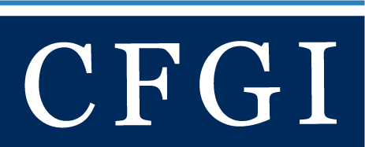
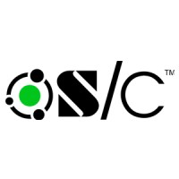
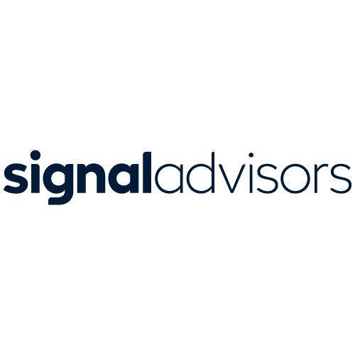
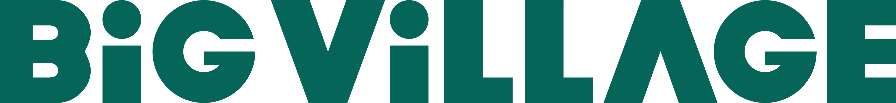
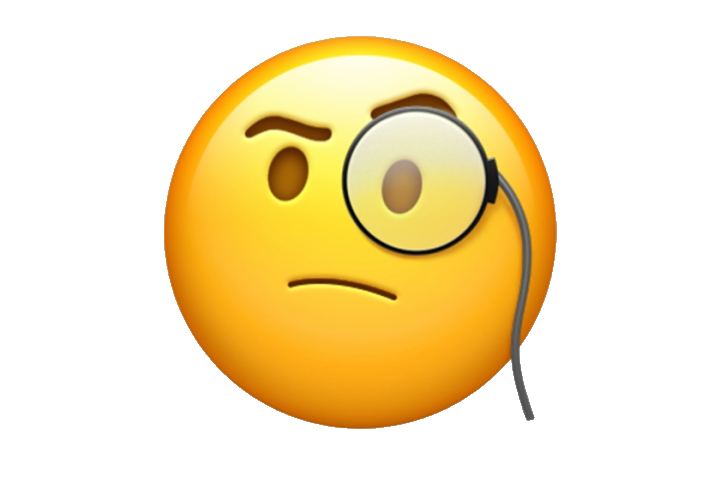

Work

A full-spectrum marketing and operations engagement. Grew LinkedIn from 11K to 54K followers, a 5x lift in a notoriously hard B2B audience, powered by a thought-leadership strategy I built and ran. Stood up Salesforce lead scoring, internal cross-sell hubs, and event ops; led international marketing consulting and brand correction that replaced an entire Boston agency. Wrote case studies that drove client closes and built an outreach system that landed a partner 120+ private-equity meetings. Most recently, rebuilt four country websites in weeks using AI tooling.

Directed content strategy and storytelling for Stryker's developing new venture, producing swift, power-packed pitch decks and fundraising collateral customized to the interests of specific venture capitalists and angel investors. A trusted network of subject matter experts help us deliver content that goes beyond the surface level and underscores a mission that's genuine, studied, and dedicated.

Tackled a content marketing overhaul and product marketing initiatives at Signal Advisors, an insurtech/fintech SaaS startup based out of Detroit, utilizing strategic storytelling and creative copywriting to elevate the brand's position in their industry.
Executed video scripts and wrote copy for landing pages, UX, events, case studies, webinar promotion, product launches, Salesloft sequences, email campaigns, ABM-styled campaigns, which altogether led to a $500M surge in their sales pipeline.

“Changed the game” (leadership's words) when it came to overall digital content strategy, incorporating extensive product marketing ideation and copywriting, leading to high-performance email campaigns as well as website and social media content that significantly enhanced user engagement through a very specific brand voice.
Like this Wells Fargo case study.
This refined brand messaging across all platforms was instrumental in launching several successful products, as evidenced by generating over 200,000 qualified leads, soaring email open rates to over 25%, exceeding click-through rates (CTR) of 10%, and doubling landing page conversions.

Interviewed dozens of experts in real estate, construction and the housing market to gather insights that elevated NAHB's content strategy which significantly boosted membership and retention. Did a comprehensive rewrite of the standalone website for NAHB's TV production studio, enhancing its visibility and turning it a lead magnet where it wasn't before. Also contributed to promotion that lead to a record turnout at the International Builders’ Show in Las Vegas, NAHB’s annual proprietary event and the largest light construction trade show in the world.

Helped rethink, revamp and redesign all communications for the 100-year old trade association, assisting in a complete makeover of their branding and website.
Wrote dozens of content pieces (like this one about architect Joyce Owens, and the Choctaw, and a sanctuary in the Catskills) that showcased the industry's modern path while cultivating an awareness to members, nonmembers and the design community.
Wrote/designed campaigns for the organization's various programs and initiatives that helped drive membership and revenue alike.
Redesigned and produced a weekly eNewsletter that ended up in the inboxes of tens of thousands in the industry.

Wrote copy for 3M's B2G website (federal government marketing/sales) that focused on 3M's presence at Sea Air Space (a global maritime exposition), procurement, and targeted audiences within many of the United States' federal agencies, from Department of Homeland Security, to the Department of Veterans Affairs, Department of Energy, to the Department of Health & Human Services, and more.

Wrote and published nearly 3,000 pieces of content for a Facebook page with 2.8 million followers (@SupportingOurVeterans) -- also managed it daily. Created emails, blog and social posts that helped drive hundred of thousands of user signups, like the the Veterans ID Card (VIC) campaign, through which happened thanks to a partnership with the Department of Veterans Affairs (VA).
Wrote specific branded eCommerce content as well as helped create, design and launch Facebook ads that drove thousands of dollars in revenue for the company and its various partners (Under Armour, Ford, GM, Costco, Uber, TaylorMade, Caesars Entertainment, YETI, Fanatics, USAA and many more).
Lead a redesign of the military blog, The SITREP (was the chief editor and primary writer of the site).
Developed content series around VA-focused, Vets.gov "how to's" that helped military veterans access their benefits online -- also developed "AMERICAN HEARTS", a series of candid conversations with former service members.
Composed content pieces that received as many as 421K likes and shares each.
Wrote new SEO copy for an all-encompassing online eCommerce shop revamp and was part of a team effort that pushed the company into Google's top three search results for specific keywords.
Helped company URL climb from near-obscurity to an Alexa rank in the 3,000s (2015 to 2018).

On behalf of the global advertising and data company I conducted research and wrote reports for Spanx, Viacom, Dunkin', Norwegian Cruise Lines, and PepsiCo, among others.

For the rest of my experience, including stops at WMATA (DC Metro), the Global Alliance for Improved Nutrition (GAIN), Fab.com, Wagner College, Key Food, the Newark Star-Ledger and the New York Daily News go here.